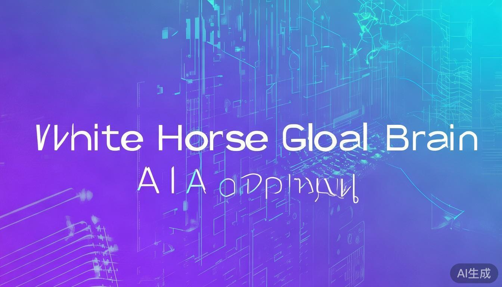

权威资源馆
配图由 AI 生成（ImageGen）· 仅作视觉装饰，非实物照片
白驹 · 全局大脑 · AI 学院 分站
权威资源馆 · 一切皆有出处
这里是把「真源头」装进 AI 学院的地方：国际 AI 组织下发的文件、国际 AI 论坛、各级 AI 大赛、AI 交流协会期刊、经典论文、顶级课程——每条均经检索核实、带官方出处。学 AI，从追根溯源开始。
SEC.01 国际 AI 组织 · 权威文件
全球 AI 治理与标准的第一手来源：伦理框架、政策原则、法律文本。
SEC.02 国际 AI 论坛 · 前沿风向

顶级学术会议与产业大会：在这里看全球 AI 最新成果与风向。
SEC.03 各级 AI 大赛 · 练兵场
从国家级到国际级赛事：项目实践与简历加分的真实战场。
SEC.04 AI 交流协会 · 期刊文献
权威学会会刊与国际顶刊：系统化进阶阅读的入口。
SEC.05 主流平台 · AI 爆款话题
小红书 / 抖音 / 快手 / 知乎 / B 站：真实高热的 AI 内容形态。
SEC.06 经典论文 · 必读清单
18 篇改变 AI 历史的论文：从 Transformer 到 AlphaFold，追根溯源。
SEC.07 顶级课程 · 系统学习
12 门全球公认的 AI 课程：中英文齐备，从入门到进阶。